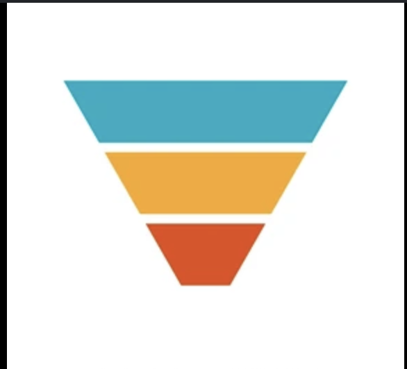
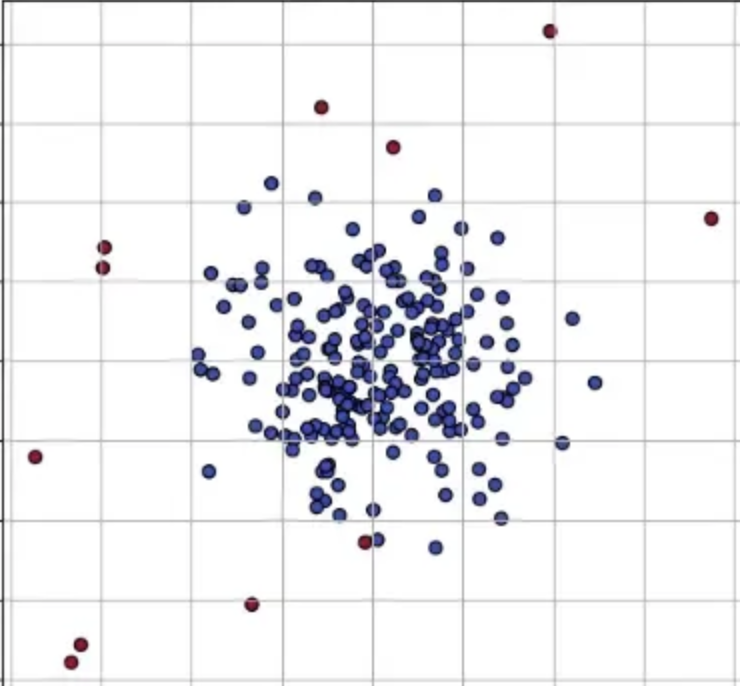
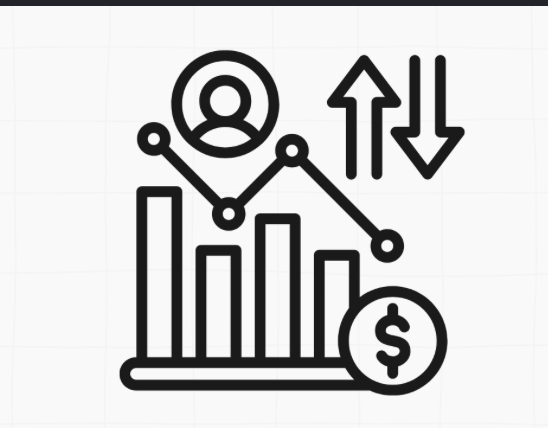

E-commerce Funnel Analysis
Built a session-level clickstream mart in PostgreSQL (1.7M sessions), modeled a View → Cart → Transaction funnel, and delivered 4 Tableau dashboards with A/B test recommendations.
A Data enthusiast who believes the best analyses aren't just technically correct,
they're humanly intuitive.
I'm drawn to the intersection of psychology and data: why people behave the way they do,
and what the numbers quietly reveal about it.
A selection of analytics and data science projects spanning SQL, machine learning, and business intelligence.

Built a session-level clickstream mart in PostgreSQL (1.7M sessions), modeled a View → Cart → Transaction funnel, and delivered 4 Tableau dashboards with A/B test recommendations.

Developed an end-to-end GMV anomaly monitoring pipeline using a 28-day rolling median + MAD baseline, detecting 17 anomalies across 409 days with a Tableau drill-down dashboard.

Designed a churn and retention pipeline in PostgreSQL across 500 accounts and 24 months, with cohort retention tracking and an early warning system using usage and support signals.
Interactive dashboards built on Tableau Public — covering funnel health, anomaly detection, and SaaS retention.
Short-form analyses, dataset explorations, and data learnings — things I found interesting enough to write down.
Month Year | Topic Tag
2-3 sentence summary of what you explored, what dataset you used, and the most interesting thing you found.
Read MoreMonth Year | Topic Tag
2-3 sentence summary of what you explored, what dataset you used, and the most interesting thing you found.
Read MoreMonth Year | Topic Tag
2-3 sentence summary of what you explored, what dataset you used, and the most interesting thing you found.
Read More
I'm Aarya Bhivsanee, a Master's student in Data Science at Stevens Institute of Technology (GPA: 3.55), with a background in Artificial Intelligence and Data Science from Savitribai Phule Pune University. I specialize in turning raw data into actionable insights through SQL, Python, and Tableau.
I've worked on projects spanning e-commerce analytics, anomaly detection, and SaaS retention — and I currently serve as a Graduate Peer Leader at Stevens, mentoring incoming graduate students.
SQL: PostgreSQL, MySQL — joins, CTEs, window functions, subqueries
Python: Pandas, NumPy, Scikit-learn, Matplotlib, Seaborn, BeautifulSoup
Analytics: EDA, Funnel Analysis, Cohort & Retention Analysis, A/B Testing, KPI Design
Reporting: Tableau, Excel, Google Sheets
Tools: Jupyter, Git/GitHub, PowerPoint
Feel free to reach out — whether it's about a project, collaboration, or just to connect!